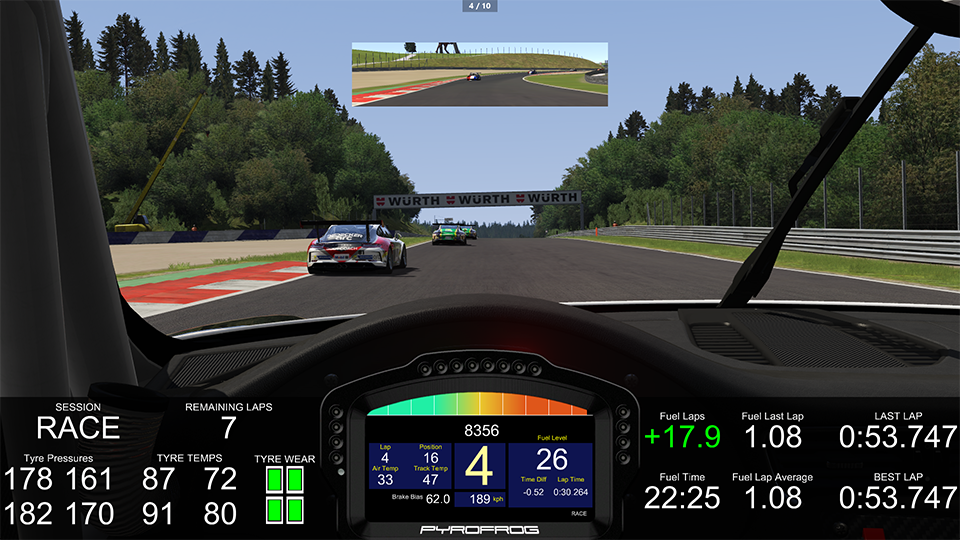
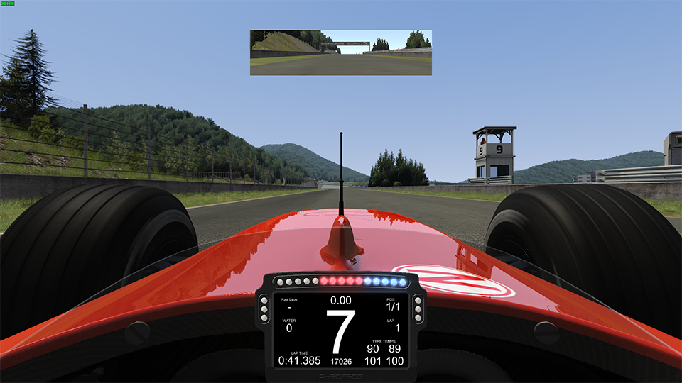

Description
Create fully customizable dashboard displays for your favourite racing sims on your Android device or on PC using extra monitors or overlay mode on your main display.
Single client for all supported games. Server automatically detects games and reads data with minimal configuration required.
Powerful editor allows you to modify built in dashboards or build one from the ground up.
Try the time unlimited demo version that reads RPM, Speed and Gear.
Full data unlocks can be purchased for each game via the in app store.
Note the supported widgets vary depending on data provided by each game.
Currently supported games (Unless specified PC Only):
-Assetto Corsa (PC/PS4)
-Rfactor 1 & 2, Game Stock Car Extreme, Automobilista, ARCA Sim Racing X - ASRX, ACTC – Simulador Turismo De Carreter
-GTR2, GT Legends, Race07, RaceRoom Racing Experience
-Project CARS 1 & 2
-Codemasters F1 2012, F1 2013, F1 2014, F1 2015, F1 2016, F1 2017 (PC/PS4/XB1) Dirt Rally, Dirt 4
-Live For Speed
-BeamNG
-iRacing
New dashboards, widgets, and data readers coming in the future.
-

-

-

-

-

-

-

-

-

-

- 
- 
Downloads
Client:
Install the client DashPanel from Steam or GooglePlay:


Server:
DashPanel Server requires the following to be installed on your system:
.NET 4.5
Visual C++ Redistributable Packages for Visual Studio 2013 x86
The latest version of the server is distributed with the free DashPanel install via Steam.
Older versions:
It is often required to update Unity so that new versions of Android are supported. This often comes at the cost of backward compatibility and new bugs in Unity.
If your device is no longer compatible with the latest DashPanel use the older version and its compatible server below. Make sure to press the "Skip this version" button if the AutoUpdate dialog is shown.
DashPanel_1.4.0:
Unity 2017.3 has a number of bugs causing incompatibility with some devices. DashPanel_1.4.0 was built with Unity 2017.1.
DashPanel_1.4.0
DashPanelServer_1.3.2.4
DashPanel_1.2.6:
Unity 5 now requires Android: OS 4.1 or later, DashPanel_1.2.6 was the last version of DashPanel that supported Android 2.3.1 or later download the APK and compatible server below.
DashPanel_1.2.6
DashPanelServer_1.1.0.4
Instructions
See full guides for DashPanel setup and usage at Steam Guides.
Disclaimer
DashPanel is NOT official software of Codemasters™, Image Space Incorporated™, iRacing™, Simbin™, Slightly Mad Studios™ or Kunos Simulazioni™. The names pCars, Project Cars, Assetto Corsa, AC, iRacing, rFactor, rFactor 2, Game Stock car, Automobilista, RaceRoom Racing Experience, GTR2, Race07, RaceRoom The Game 2, and GTR Evolution are used for identification purposes only. All trademarks and registered trademarks are the property of their respective owners.
THE SOFTWARE IS PROVIDED ""AS IS"", WITHOUT WARRANTY OF ANY KIND, EXPRESS OR IMPLIED, INCLUDING BUT NOT LIMITED TO THE WARRANTIES OF MERCHANTABILITY, FITNESS FOR A PARTICULAR PURPOSE AND NONINFRINGEMENT. IN NO EVENT SHALL THE AUTHORS OR COPYRIGHT HOLDERS BE LIABLE FOR ANY CLAIM, DAMAGES OR OTHER LIABILITY, WHETHER IN AN ACTION OF CONTRACT, TORT OR OTHERWISE, ARISING FROM, OUT OF OR IN CONNECTION WITH THE SOFTWARE OR THE USE OR OTHER DEALINGS IN THE SOFTWARE.